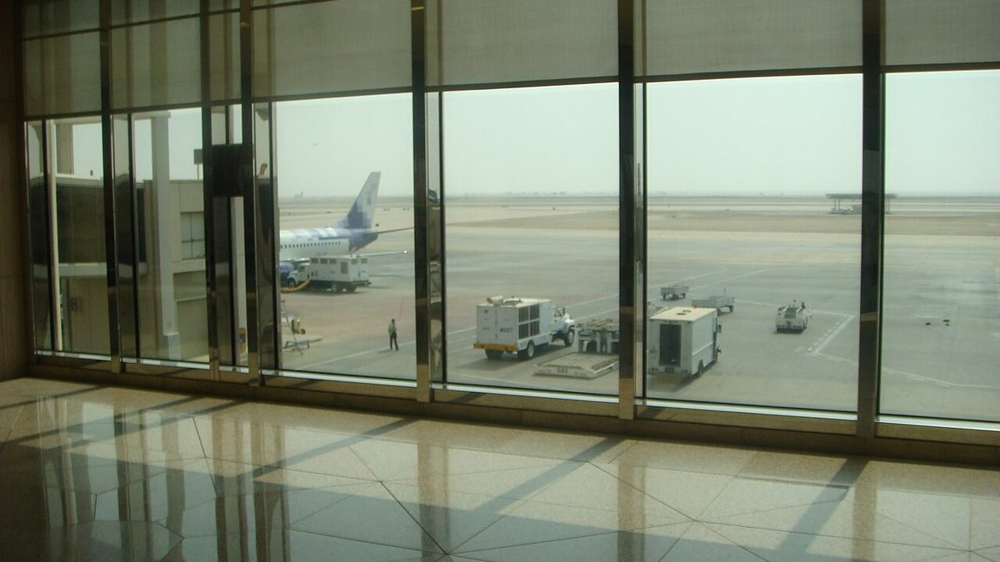

Attaque contre l'aeroport King Fahd de Dammam, deux morts et huit blesses
Les autorites saoudiennes de l'aviation civile ont porte jeudi le bilan a deux morts, un citoyen saoudien et un resident indien, avec huit personnes toujours blessees apres l'attaque de mercredi soir contre l'aeroport international King Fahd.

Points clés
- L'Autorite generale de l'aviation civile d'Arabie saoudite a dit jeudi que le bilan de l'attaque de mercredi soir contre l'aeroport international King Fahd de Dammam etait passe a deux morts,…
- Le nombre de blesses reste a huit.
- L'ambassade d'Inde a Riyad a dit sur X que les autorites saoudiennes lui avaient indique qu'un ressortissant indien figurait parmi les deux personnes tuees et que deux ressortissants indiens…
Mis a jour 10:40 UTC, 22 oct 2026, le bilan passe a deux morts et l'aeroport reprend ses operations
L'Autorite generale de l'aviation civile d'Arabie saoudite a dit jeudi que le bilan de l'attaque de mercredi soir contre l'aeroport international King Fahd de Dammam etait passe a deux morts, apres la confirmation d'un deces supplementaire. Les deux personnes tuees etaient un citoyen saoudien et un resident indien, a dit l'autorite.
Le nombre de blesses reste a huit. L'autorite a dit que les blesses sont un citoyen saoudien et des residents de nationalite indienne, yemenite, bangladaise et nepalaise, deux Indiens, deux Yemenites, deux Bangladais et un Nepalais au total, avec des blessures allant de legeres a critiques. Ils sont soignes dans plusieurs hopitaux.
L'ambassade d'Inde a Riyad a dit sur X que les autorites saoudiennes lui avaient indique qu'un ressortissant indien figurait parmi les deux personnes tuees et que deux ressortissants indiens avaient ete blesses. L'ambassade a dit qu'elle verifiait d'autres details et contactait les familles concernees.
L'autorite a dit qu'elle travaillait avec les agences de securite pour evaluer les degats et verifier la securite des installations. Les operations de l'aeroport ont repris et le trafic aerien est revenu a la normale, a t elle dit.
**Mis à jour à 00 h 34 UTC.** Histoire en développement.
Un résident saoudien a été tué et huit personnes ont été blessées dans une attaque menée tard mercredi 21 octobre contre l'aéroport international Roi Fahd à Dammam, a déclaré l'autorité saoudienne de l'aviation civile.
L'Autorité générale de l'aviation civile a annoncé ce bilan tôt jeudi, heure locale. Elle a indiqué que l'aéroport avait subi des dégâts matériels et, dans un autre communiqué rapporté par Reuters, que ces dégâts étaient en cours d'évaluation. L'autorité n'a donné aucun autre détail et n'a pas dit qui avait mené l'attaque.
Flightradar24, un service mondial de suivi des vols, a déclaré sur X que les vols avaient été détournés de l'aéroport. Dammam se trouve sur le golfe Persique, dans l'est de l'Arabie saoudite, près de Bahreïn et du Qatar, et son aéroport dessert la province orientale, productrice de pétrole.
Aucune revendication pour cette attaque
Les autorités n'ont nommé aucun suspect. Les Houthis du Yémen, soutenus par l'Iran, qui ont mené ces dernières semaines une vague plus large de frappes de missiles et de projectiles contre de grands aéroports saoudiens, n'avaient pas commenté cette attaque, a rapporté l'Associated Press.
La coalition dirigée par l'Arabie saoudite a déclaré avoir intercepté quatre attaques de drones dans la région orientale. Les responsables n'ont pas lié directement cette annonce à l'attaque de l'aéroport dans les communiqués rapportés jusqu'ici.
L'aéroport Roi Fahd a déjà été attaqué pendant la vague actuelle de frappes. Cette dernière attaque s'ajoute à une série d'incidents dans des aéroports et des sites énergétiques saoudiens qui a fait craindre une escalade plus large.
Un deuxième incident mortel le même jour
Plus tôt mercredi, le ministère saoudien de l'Énergie a déclaré que les débris d'un drone intercepté avaient tué deux personnes et blessé deux autres personnes dans un champ pétrolier exploité par Aramco, dans le sud-est du pays.
Le ministère a précisé que les deux personnes tuées étaient un ressortissant népalais et un ressortissant philippin. Les deux blessés étaient un ressortissant pakistanais et un ressortissant indien.
Mercredi soir, les États-Unis ont ordonné à certains diplomates et aux familles des employés du gouvernement américain de quitter l'Arabie saoudite. L'Associated Press a lié cette décision à la série d'attaques mortelles menées dans le pays par les Houthis et aux craintes croissantes d'une escalade des hostilités.
Le mois dernier, les débris d'un drone houthi intercepté ont tué un résident yéménite en Arabie saoudite. L'Associated Press a indiqué qu'il s'agissait de la première victime civile depuis que les Houthis ont intensifié leurs attaques contre le royaume, en visant le transport maritime et les installations pétrolières saoudiens. Au début de ce mois, un incendie limité s'est déclaré dans un bâtiment administratif d'une installation d'Aramco dans la province orientale qui avait été visée par une attaque, avait alors déclaré le ministère de l'Énergie.
Ce que l'on ne sait pas encore
Les responsables n'ont pas dit ce qui avait touché l'aéroport, comment l'attaque avait été menée, ni combien de temps dureraient les détournements de vols. Ils n'ont pas communiqué le nom de la personne tuée ni l'état des huit blessés.
Cette histoire sera mise à jour dès que les autorités saoudiennes, les compagnies aériennes et les services de suivi des vols publieront des informations confirmées.
Chronologie
- Oct 21, 2026Une attaque menée tard mercredi contre l'aéroport international Roi Fahd à Dammam fait un mort parmi les résidents et huit blessés, selon l'Autorité générale de l'aviation civile. Les vols sont détournés de l'aéroport, selon Flightradar24.
- Oct 21, 2026Plus tôt le même jour, les débris d'un drone intercepté tuent deux personnes et en blessent deux autres dans un champ pétrolier exploité par Aramco dans le sud-est de l'Arabie saoudite, selon le ministère de l'Énergie. Mercredi soir, les États-Unis ordonnent à certains diplomates et aux familles des employés du gouvernement de quitter l'Arabie saoudite.
Sources
- Reuters: Saudi civil aviation says one killed, eight injured in attack on King Fahd airport
- Associated Press: 1 person killed in attack on eastern Saudi airport, authorities say
- Reuters: Two killed, 8 injured in attack on airport in Saudi oil city Dammam
- IANS: Indian national among two people killed in attack on Saudi Arabia's airport, two Indians injured